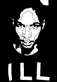
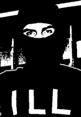
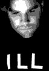

|

21-22 corporation
· the artists

Charles Noel
(Archetype) is founder, president, and primary artist for the 21-22
Corporation.
From its modest beginnings as a cassette-only, industrial breakbeat
label, Charles has overseen every aspect of the Corporation's growth
and development. He has utilized the label as an outlet for his own
artistic growth: as a visual artist in the digital realm, an unacknowledged
pioneer of North American drum'n'bass (Monochrome), and a highly-respected
tribal techno producer (Archetype).
At the same time, he has also allowed the Corporation to serve as a
testing ground for other like-minded artists including Todd Sines, Titonton
Duvante, Kevin Kennedy, Morgan Geist, Kevin Moon, and Mike Szewczek.
Since 1998, Charles has performed all over North America, and has made
appearances in the UK, Belgium, Germany, and The Czech Republic. In
June 2001 he was also featured at the famed Sónar
Festival in Barcelona, Spain.
His releases for Black
Nation Records (Michigan) and Ongaku
(Germany) are only a few among the many in the works; including a mysterious
new sublabel strictly for his material as Archetype, called GLYPH.
Charles is also a formidable techno and house DJ, and is co-founder
of the ele_mental collective,
spearheading several of its more conceptual events.

Edward Luna
(eluna) is primary designer and editor for the 21-22 Corporation.
Edward has helped guide the Corporation through its many transitions:
from a low-tech, cassette-only enterprise, to an internationally-recognized
experimental music label.
He is also a lecturer,
experimental DJ, choreographer, and co-founder of the ele_mental
collective. As part of ele_mental, Edward has spearheaded dozens
of conceptual underground music events, including collaborations with
Underground Resistance,
Public Transit Recordings, Black
Nation, Reinforced,
and Gordon Sharp;
many of which have blurred the edges between underground dance party,
"happening," installation, and salon-style concert.
Edward has performed as a DJ across North America (see August 9, 2001
on Betalounge), México,
and at 2001's Sónar
Festival in Barcelona, Spain. His own sublabel, as yet unnamed,
is to feature noise-influenced electro.
other artists

Kevin Ginger (Valence) is a kinetic sculpture/installation artist and frequent contributor to ele_mental . He is also known for his unique style of minimal techno, which has appeared on "Trace Elements 4" and the recent "div is ions of five" solo techno EP. Highly influenced by the m_nus, Chain Reaction, and BCP schools of experimental minimal techno, Kevin brings a heavier thump into his music as he explores the sculptural qualities of sound itself.
more to come
|